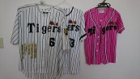

関東在住のフリーランスエンジニア(46歳)
娘を愛してやまないオヤジがなんとか生き残ってますが、働き方改革を模索中…
システム開発の業界で24年目を迎えJavaを使ったシステム開発（主にBtoB）を中心に活動してます
中学生の時、バース・掛布・岡田のバックスクリーン３連発に魅了されてから33年間、阪神タイガースを応援し続けています

Career
官公庁システム開発、物流システム開発、地銀システム開発、ECパッケージ開発、大学ポータルサイト開発、公益法人システム開発
メール配信システム開発、iPhoneアプリ開発
Skill
Java、PHP、VBA
SpringFrameWork、Struts、Seasar2
PostgreSQL、MySQL、Oracle
Windows、Linux